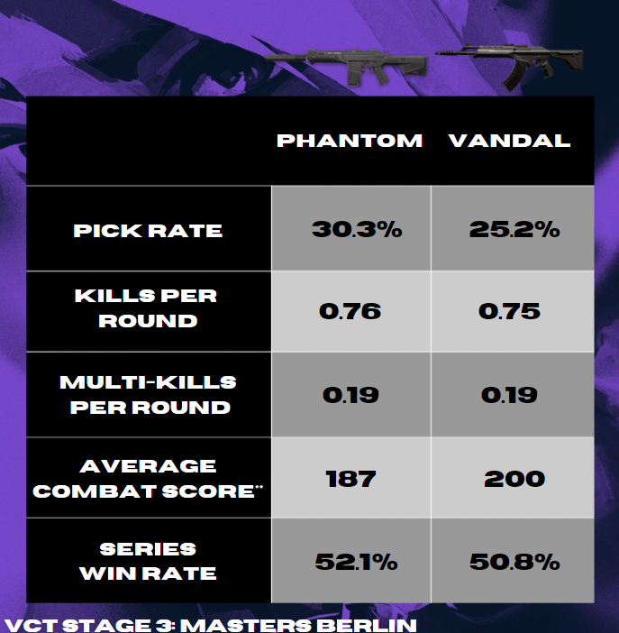
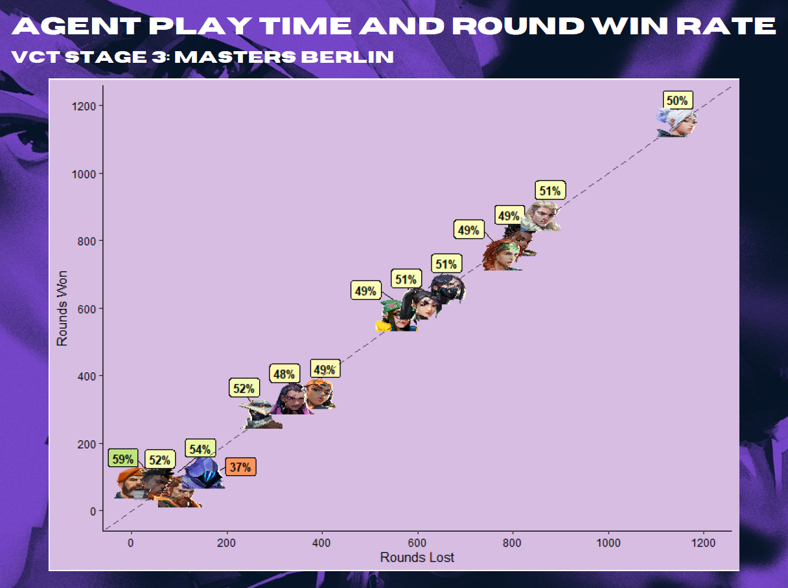
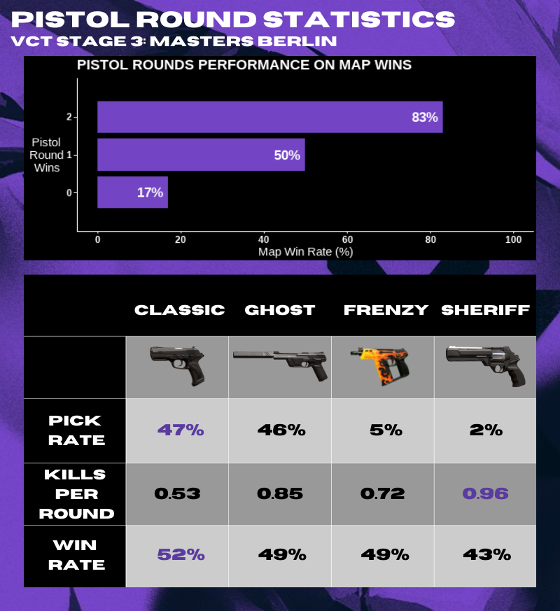

This is a place for some of my favourite data visualizations I’ve done, and can post without breaking workplace NDAs!
In my spare time I’ve been taking a look at statistics from professional Valorant Esports, and sharing them with the game’s community. Data sets used are courtesy of Riot’s API wrapper made by rib.gg.
